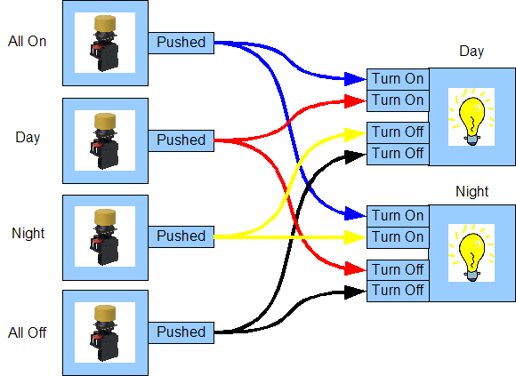
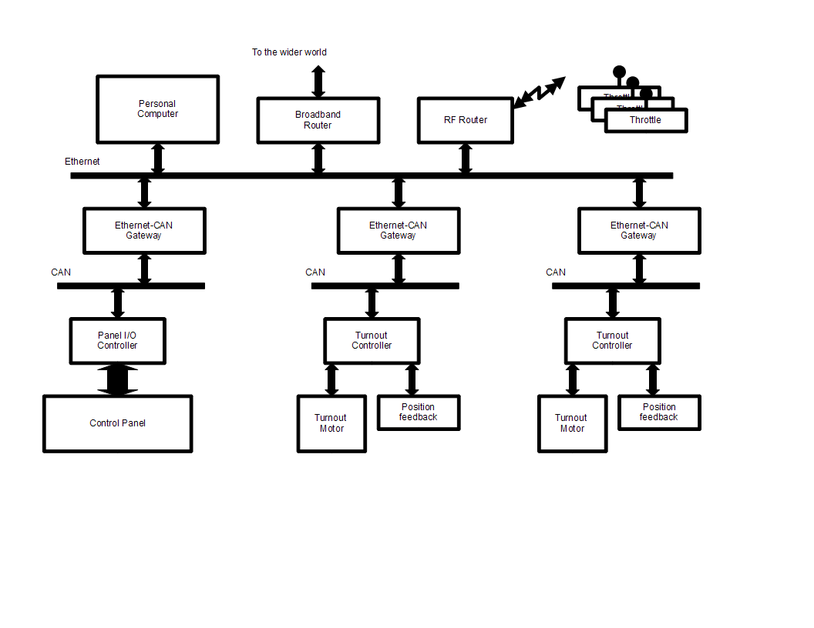

OpenLCB:
A First Look
OpenLCB:
A First Look
In 2010, model railroaders expect a lot from the electronics on their layouts. They want to automate accessories, simplify operation of their staging yards, have fine control over layout lighting, and build realistic dispatcher panels. Home and club layouts are getting more detailed and complicated, and existing electronics for control systems are having a hard time keeping up. OpenLCB is intended to be the next step forward, providing better layout controls for the next twenty years.
What is OpenLCB?
OpenLCB is a messaging system that products can use to help you control your model railroad in a simple manner, with less wiring. It is a parallel system to the train control system, whether that is DC or DCC. Although it is useful on small layouts, it is powerful enough to control very large layouts, such as those in museums or built by modular clubs.
OpenLCB stands for 'Open Local Control Bus'. 'Open' means that it is developed as an open-source connection standard. Open, collaborative development is a great way for model railroaders to get the products they want for their layouts. Like the DCC standard, manufacturers and hobbyists can use the OpenLCB documents and reference designs to create products to do all sorts of things, while still ensuring that products from different companies will work together.
 OpenLCB
connects units called 'nodes', typically circuit boards which take
inputs, such as push-buttons and block detectors, and controls
outputs such as lights and switch-machines. The nodes send messages
to each other using a few wires run between them called a 'bus', that
acts as a party line.
OpenLCB
connects units called 'nodes', typically circuit boards which take
inputs, such as push-buttons and block detectors, and controls
outputs such as lights and switch-machines. The nodes send messages
to each other using a few wires run between them called a 'bus', that
acts as a party line.
Getting Started:
 Simple
layouts might start with only a few nodes (boards), for example a set
of push-buttons that are used to control a set of turnouts (points).
In this case, one or more OpenLCB turnout-controller nodes and a
panel node, such as a multi-button node, and a power supply would be
needed. After the nodes are connected together with the bus cables,
as per their instructions, and are powered on, the nodes will all
listen on the bus. When a button is pushed, the button-node does send
a message on the bus to indicate that the button was pushed, which is
called an event. Other nodes are then taught to respond to that
message by causing something to happen, such as turning on a light,
changing a signal, or moving a turnout.
Simple
layouts might start with only a few nodes (boards), for example a set
of push-buttons that are used to control a set of turnouts (points).
In this case, one or more OpenLCB turnout-controller nodes and a
panel node, such as a multi-button node, and a power supply would be
needed. After the nodes are connected together with the bus cables,
as per their instructions, and are powered on, the nodes will all
listen on the bus. When a button is pushed, the button-node does send
a message on the bus to indicate that the button was pushed, which is
called an event. Other nodes are then taught to respond to that
message by causing something to happen, such as turning on a light,
changing a signal, or moving a turnout.
 Teaching
a node about how its connections respond depends on the node, but the
usual process is use buttons on one node to tell it to “learn”
the message for a particular output, and then going to another node
to tell it to “teach” the message for an input or output. From
then on, those will be connected together, and changes in the input
will drive the output. A button or toggle switch can drive a lamp or
turnout motor in another location. You can add other inputs and
outputs to that connection by just repeating the process, so that the
turnout responds to two buttons or a switch controls several lamps.
Teaching
a node about how its connections respond depends on the node, but the
usual process is use buttons on one node to tell it to “learn”
the message for a particular output, and then going to another node
to tell it to “teach” the message for an input or output. From
then on, those will be connected together, and changes in the input
will drive the output. A button or toggle switch can drive a lamp or
turnout motor in another location. You can add other inputs and
outputs to that connection by just repeating the process, so that the
turnout responds to two buttons or a switch controls several lamps.
This process is called the 'Producer/Consumer Model'. The messages are called 'events'; the node that sends a particular event is called a 'producer', because it produces the event; and the node that acts upon it is called the 'consumer', because it consumes the event.
Flexible Controls:
The Producer/Consumer, or P/C, Model is very powerful. It allows one or more producers to cause one or more consumers to perform actions. However, its real power comes from the fact that neither the producers, nor the consumers, need to know about any of the others. While it is obvious that a button press might cause a turnout to go to the closed position, a single event can also allow two buttons at opposite ends of the layout to control twenty-five turnouts, i.e. to set a route. Events can represent such abstract concepts as “Set the lighting to dawn”, or “Set the layout to mainline running”, which can effect multiple different devices on the layout in different ways.
Easily grow as far as you want:
While OpenLCB makes it simple to control small layouts, it really shines as your layout grows. You can add new devices to the layout without having to change the configuration of any of the others. You don't have to think about addresses or board numbers or command codes, because those are handled by the producer/consumer connections. You can put together a couple devices on your workbench, and later move them to the layout without worrying about conflicts between addresses or having to keep track of which channel numbers you've used already.
 Although
OpenLCB puts most of the layout control in the nodes themselves,
without needing a computer, its also possible to connect a computer.
You might want one to use more advanced configuration tools that
don't require pushing buttons, to provide a glass dispatcher panel,
or use it for some other reason. The OpenLCB protocols have been
designed to easily connect to computers and home networks. Both USB
and Ethernet connections have already been developed, and others are
certainly possible. The OpenLCB protocols are also structured so that
a connected computer can rapidly learn the layout's setup and provide
useful tools, without a lot of separate configuration. OpenLCB gives
the computer the tools to do all the configuration & control
tasks that people have learned to expect from programs like
DecoderPro, except now it's for their layout controls.
Although
OpenLCB puts most of the layout control in the nodes themselves,
without needing a computer, its also possible to connect a computer.
You might want one to use more advanced configuration tools that
don't require pushing buttons, to provide a glass dispatcher panel,
or use it for some other reason. The OpenLCB protocols have been
designed to easily connect to computers and home networks. Both USB
and Ethernet connections have already been developed, and others are
certainly possible. The OpenLCB protocols are also structured so that
a connected computer can rapidly learn the layout's setup and provide
useful tools, without a lot of separate configuration. OpenLCB gives
the computer the tools to do all the configuration & control
tasks that people have learned to expect from programs like
DecoderPro, except now it's for their layout controls.
Although finished implementations aren't available yet, OpenLCB is designed to connect with existing systems like LocoNet, XpressNet, C/MRI, DCC, etc. For example, an OpenLCB installation can connect to a pre-existing DCC system using a “bridge” so that DCC accessory decoder operations (turnout commands) control OpenLCB nodes.
The Technology:
 Simple
OpenLCB nodes are connected using the commercial-standard “Control
Area Network bus” or CAN bus. CAN is an extremely robust
technology, used in applications from factory floors to
automobile-controls. Using a widely-available standard like this
makes is easy and cost-effective for manufacturers to build products
that work together. A single CAN bus cable can accommodate from 50-75
nodes spread out over 300-400 feet. Should your layout grow beyond
that, or you take your modules to a large modular meet, you can
control the layout with two bus-segments, and join them with a
bus-repeater. Using two segments makes each shorter, have less nodes,
and need less power. The bus-repeater node simply joins the two
halves together by moving the messages back and forth. The important
point is that you do not have to change anything else. All your
configuration is intact and you can just continue as you were.
Simple
OpenLCB nodes are connected using the commercial-standard “Control
Area Network bus” or CAN bus. CAN is an extremely robust
technology, used in applications from factory floors to
automobile-controls. Using a widely-available standard like this
makes is easy and cost-effective for manufacturers to build products
that work together. A single CAN bus cable can accommodate from 50-75
nodes spread out over 300-400 feet. Should your layout grow beyond
that, or you take your modules to a large modular meet, you can
control the layout with two bus-segments, and join them with a
bus-repeater. Using two segments makes each shorter, have less nodes,
and need less power. The bus-repeater node simply joins the two
halves together by moving the messages back and forth. The important
point is that you do not have to change anything else. All your
configuration is intact and you can just continue as you were.
The Future:
Great care has been taken to design OpenLCB so that it has lots of room to grow. It's intended to work for the very largest modular layouts, and also to grow with the next 25 years of model railroading. The twenty-year history of DCC provides lots of examples of how creative model railroaders can think of new uses for electronics. OpenLCB has lots of capability built in to keep up with that for the next twenty years and more. For example, even though CAN segments can only handle limited number of nodes and limited length, OpenLCB provides the tools needed to create automatic bridges to connect multiple CAN segments together without complicated configuration or electrical issues. The messages and addresses used on all segments never change. There's no need to reconfigure nodes to another mode or with different software as the layout grows. Should the layout outgrow even the capacity of CAN segments, OpenLCB allows for the creation of “filtering” bridges that only move messages to segments where they are needed. OpenLCB has even been designed to include layout control over Ethernet or WiFi connections when the ultimate in speed and convenience is desired.
Simplicity:
However, the biggest advantage to OpenLCB is not apparent unless you compare it to other buses. Other buses require the user to choose 'node IDs' and to ensure that no node has the same ID. Similarly, you have to keep track of the numbers used to represent events. This is quite easy on small layouts, reasonable on larger layouts, but becomes very time-consuming on very large layouts or layouts that are put together from multiple people's modules, such as occurs at large meets of Fremo, Free-mo, Ntrak, oNeTrak, etc. OpenLCB keeps track of node numbers, command and channel numbers, and all that other book-keeping so that users never have to worry unless they want to. This makes putting together large modular layouts more efficient. You never have to reconfigure a module because its addresses are already in use. Together with other advanced features, OpenLCB lets these groups focus on enjoying their massive layouts.
Summary: OpenLCB is a Step Forward for Layout Control
OpenLCB is a messaging system that connects accessories together in a coherent whole in a simple manner that lets model railroaders run their railroads.
More information is available at http://openlcb.org. Come join us!
Site hosted by
{kind=link}
{kind=link}